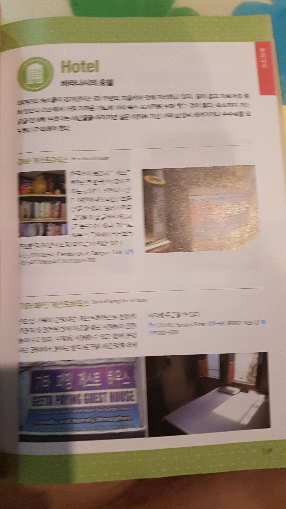
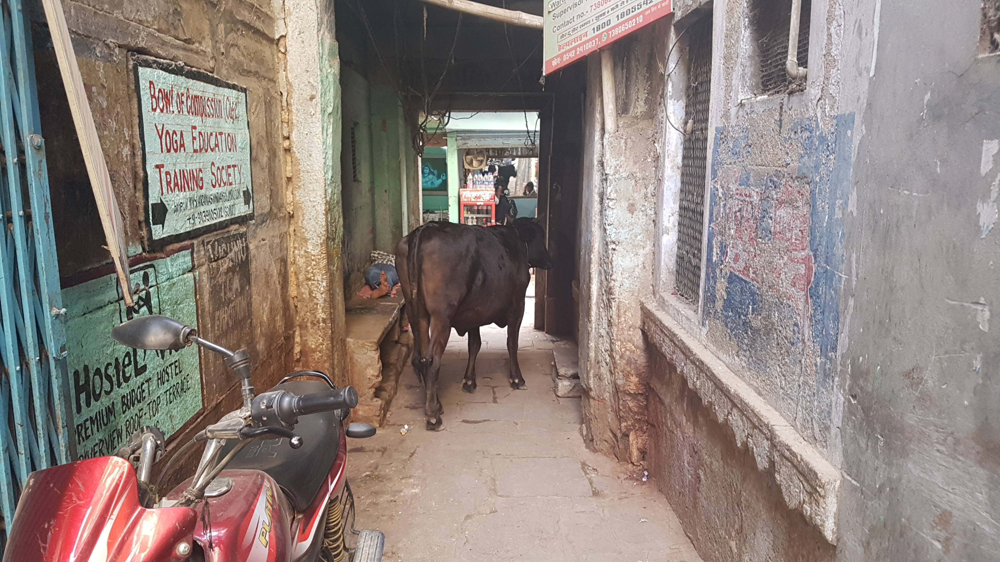
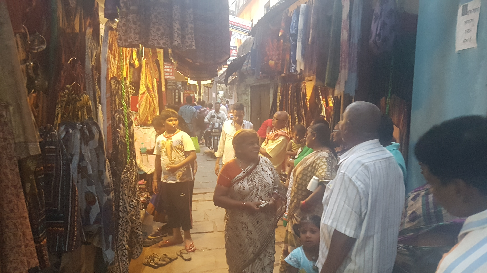

layout: post
title: 인도 도착 하자마자 물갈이 시작
subtitle: "여행 D+30, 인도 D+1"
date: 2017-05-03 12:00:10
tags: 포스팅
header-img: img/post-travel-30.jpg
인도 도착 하자마자 물갈이 시작
이상하게 살살 배가아파왔다. 결국 새벽 3시반에 일어나서 볼일을 보러갔다. 변이 점점 묽어지는게 뭔가 느낌이 좋지 않았다. 그리고 한 4시반에 차가 멈춰 있었다. 원래 도착 예정시간이 4시 반이었기 때문에 설마 도착한건지 깜짝놀라서 나가봤는데 옆에있던 사람이 아직 바라나시가 아니라고 해줬다. 안내방송은 일절없다. 본인이 알아서 일어나서 내려야한다. 5시반즘 다시 깼는데 느낌이 이상해서 나가봤는데 어떤역에 정차해 있었고 수많은 사람들이 지나가고 있었다. 그런데 갑자기 어제 기차표를 구하는데 도움을 준 친구가 그때 마침 지나가고 있었다. 그친구가 "야~ 여기 바라나시야 내려!"라고 말해줬다. 큰일 날 뻔 했다. 정말 운이 좋았다 어떻게 딱 그 친구가 그 시간에 여길 지나갔는지. 나는 바로 사태파악을하고 짐을 꾸리고 내렸다.
역시 소문대로 내리자마자 호객꾼들이 붙었다. 생각해보니 어디로 갈지 정해놨어야 했는데 그러지 못하고 내렸다. 그래서 대충 여행자들이 많이 묶는 숙소로 가는게 좋겠다고 말했는데 이게 실수였다. 릭샤꾼들에게 반드시 정확한 목적지를 말해야한다. 이 사람들은 본인이 안내하는 숙소에서 커미션을 받기 때문에 다른곳으로 데려가려고 한다는 사실을 나중에 알았다. 그리고 내가 당했던것이 바로 정확히 그것이었다.
나가는길에 나는 뭔가 잘못된것을 깨달았다. 그리고 나는 한국인이 운영하는 게스트하우스로 이동하려고 한다. 라고 말했더니 이아저씨가 그것은 doesn matter라고 한다. 내가 안내해주는 게스트하우스에 가면 수많은 사람들이 있으니 걱정하지 말라고 한다. 가뜩이나 장기간 이동을 해서 피곤해 죽겠는데 이것 가지고 계속 말 씨름했다. 답답해서 돌아버릴뻔 했다. 근데 더 큰 문제는 갑자기 배가 문제가 생겼다는거다. 이번에는 분명 설사다! 계속 말씨름하는데 점점 참을수 없는 지경에 이르렀다. 기차역에 있는 화장실에 가겠다고 했는데 거기가면 1시간을 기다려야 한다고 못가게 한다. 미쳐버릴것 같았다. 그래서 일단 출발해라고 했다. 도저히 참을 수가없어서 이사람이 안내하는 게스트하우스에 가서 볼일을 봐야했다.
며칠전에 인도정보책에서 촬영했던 한국인 계스트 하우스 페이지를 촬영해놨던 사진을 확인했다. 근데 하필이면 사진을 이따구로 찍었는지 영어 스펠링이 읽히지가 않았다. 이 아저씨한테 내가 가려는곳이 이곳이다 라고 말하려고 하는데 자꾸 안된다고 한다. 불가능하다고 한다. 가뜩이나 똥이 나오려고 하는데 돌아버릴것 같다. 사진은 왜 이따구로 찍어놨는지!! 지도에 표시하고 보여주기라도 하면 좋겠는데, 내가 가려는곳이 어떤게스트 하우스인지 정확히 지도에 찍을수가 없다! 제기랄ㄹ!!
 문제의 사진
인도 처음부터 정말 짜증나는 경험이다. 결국 참을수 없었던 나는 그냥 여기근처 아무 게스트하우스에 내려줘!!!! 라고 말했다. 이아저씨가 또 날 짜증나게 한점은 방을 먼저 예약해야 화장실을 이용할수 있다고 하면서, 자꾸 내려주지 않고 빙빙 돌다가 뒤늦게 본인이 아는 게하에 내려줬다는 거다. 절대로 이놈이 묶으라고 하는 게하에는 묶어주지 않을거다.
결국 도착해서 호텔 리셉션 아저씨한테 미안한데 지금 너무 urgent 해서 화장실 먼저 이용할 수 없냐고 했다. 다행이 먼저 이용할수 있게 해줬다. 이 릭샤꾼이 너무 미워서 미리 주기로한 돈을 지불해줬다. 빨리 헤어지고 그냥 내가 알아 한국인 게하로 가기 위해서다.
역시 예상대로 설사였다. 물갈이가 시작된 것이다. 뭘했다고 물갈이를 시작한거지? 네팔에서도 정말 잘먹고 잘싸고 훌륭한 시간을 보냈는데 왜 인도에 도착하자마자 이런건지 모르겠다. 나중에 생각해보니 오늘 계속 버스를 타면서 맞은 수많은 흙먼지 때문에 내 장내 미생물 환경에 불균형이 오지 않았나 싶다.
거사를 마친 뒤, 화장실 맞은편에 출구가 보여서 그쪽으로 도망가려고 했다. 혹시나 리셉션이 화장실을 썼으니 돈을 내거나 체크인을 하라고 말할까봐 걱정되서다. 젠장, 잠겨있었다. 어쩔수 없이 방을 예약해야하나? 나는 방을 한 번 둘러본뒤 마음에들지 않는다고 말하고 나올 계획으로 리셉션으로 갔다. 우물쭈물 말하려고 하는데 그냥 솔직히 말하기로 했다. 나는 사실 이곳에 똥을 싸러 왔다. 너무 급해서 그랬다. 이 방을 구하지 않을것이다 미안하다 하고 했더니 그 사람이 흔쾌히 알겠다고 하는것이다! 방을 구해야 화장실을 이용할 수 있다는것은 역시 뻥이었다. 릭샤꾼 아저씨가 내게 또 사기를 친 것이다. 사람의 목숨이 걸린 상황에서 거짓말을 하다니 용서할 수가 없었다.
화장실에서 다행이 며칠전에 주어들은 bona caffe 구글맵에 찍어놨다. 일단 이곳에가서 인터넷 연결을 한뒤에 원하는 숙소를 검색해서 갈 계획을 했다. 기분좋게 나왔는데 그 릭샤꾼은 나한테 뭘 더 뽑아먹으려고 하는지 가지 않았다. 나가 보나까페에 데려다 줄 수 있냐고 했는데 못간댄다 그럼 그 근처에 내려주고 내가 걸어갈거다 라고 했더니 알겠다고 한다. 내가 아까 준 돈에 이것도 포함된거지?라고 물었더니 100 더달랜다. 그래서 꺼지라고 했다.(속으로) 나는 걸었다.
뒤늦게 http://wikitravel.org/en/Varanasi 에서 내가 당했던 내용에대해서 읽었다. 그런식으로 호텔을 통해 커미션을 받는다고 한다. 그렇게 사기를 치는 넘들이 한둘이 아닌가보다. 그것이 그들의 삶이니 화내지 말라고 한다. 나만 당한건 아니구나 하는 생각에 안도감이 생긴다. > Don't believe him. Drivers receive commission from hotels for bringing in new guests, and this is one way to trick newcomers to going to these places. Don't get annoyed, but see the exchange as playful banter and part of the Varanasi experience. However, if the driver continuously refuses to follow your instructions, threaten to get out of the rickshaw.
처음 만난 바라나시의 지저분하고 좁은 골목. 충격.
걸어가는길에 다른 릭샤꾼을 만났다. 결국 80이나 주고 아침 6시 반즘 목적지에 도착했다. 나는 보나까페가 한국처럼 넓은 대로변 옆에 위치한 까페인줄 알았는데 전혀 아니었다. 그 까페에 가는길은 정말 좁디좁은 골목길이었다. 그리고 그길 중간중간은 소똥천지에 쓰레기 천지였다. 온갖것들을 미리 예상하고 왔지만 이런 좁은 골목은 예상하지 못했다. 도데체 이딴 곳이 뭐가 좋다고 한달씩 있는거지??
bona까페를 일단 찾아갔다. 거기서 와이파이도 연결해서 잘만한 숙소를 검색해서 묶어야한다. 좁은 골목이라 gps도 잘 잡히지 않고 구글맵에 길이 표시가 잘 되어있지 않다. 게다가 너무 이른 아침이라 모든 가게가 문을 닫고 있었다. 다행히 보나까페 근처에 문을 연 식당하나가 있었다. 그래서 거기서 일단 아침을 먹기로 했다.
아침을 먹는중에 한국인같이 생긴 사람 3명이 들어온다. 역시나 한국인같이 생긴사람한테는 인사하기 어렵다. 한국말로 인사하기도 뻘줌하고 헬로우라고 인사하기도 뻘쭘하다. 밥을먹다가 한국인이냐고 물었더니 맞다고 한다. 2명은 세계여행중인 청년이고 한명은 휴가를 이용해 나온분이다. 다행이 이분들한테 이것저것 정보를 얻었다. 원래 생각했던 기타페잉 게스트하우스와 레바 게스트하우스는 더이상 운영되지 않는다고 하는 충격적인 소식을 들었다. 그래서 식사를 마친뒤 그들이 묶는 숙소에 같이 가보기로 했다.
결국 그들과 근처에있는 숙소에 묶었다. 한국인이 많이 묶는 숙소인것 같았다. 가격은 하루밤에 250루피(약 5000원) 도착하자마자 샤워를 하고 빨래를 하고 누웠으나 잠에 들지는 못했다. 밖에 잠깐 나가서 점심도 먹고 보나까페에가서 밀린 일기를 쓰기로 했다.
약 11시정도에 나간 바라나시의 좁은 골목 풍경은 아침에 경험했던 것과는 달랐다. 그 좁은 골목에 엄청나게 많은 사람들이 있었다. 수많은 상점과 사람들, 수많은 소들과 바닥에 똥들 , 골목골목 코를 찌르는 악취, 그렇게 좁은 골목을 지나다니는 오토바이들, 외국인들, 음악들이 어우러져 생기가 넘쳤다. 그 속에서 엄청난 에너지를 느꼈다. 이것이 진짜 바라나시의 모습이구나! 오늘 아침 느낌은 엄청나게 드럽고 좁은 골목이었는데 오후의 그 골목은 내게 색다른 아름다움으로 다가왔다. 엄청나게 독특한 장소라는 느낌이 들었다. 특히 그곳이 좁은곳인데도 온갖 것들이 다 있었다는 사실이 굉장히 인상적이었다. 그래도 이런곳이 뭐가 좋다고 한달 두달씩 머무는 걸까? 여행자들중에 그런사람이 정말 많다. 오늘 색다른 매력을 느꼈지만 아직까지는 그들이 이해가 가지는 않는다.
 골목을 가로막고 있는 소
 아침과다르게 생기넘치는 골목의 모습
더러움의 정의를 새롭게 내려야할것 같다. 이곳사람들에겐 소똥과 쓰레기는 더러움의 대상이 아니다! 이것 또한 나의 고정관념이었을까? 이 사람들은 소똥과 쓰레기로 얼룩진 그 골목을 그냥 맨발로 걷는 사람들이 많다. 내가 알고 있던 더러움이라는 개념과 이사람들이 가진 개념이 분명 다르다는 생각이 들었다.
전에있었던 포카라처럼 이곳 바라나시에도 한국인들이 정말 많다. 포카라보다 훨씬 많다. 보이는 외국인들 중 절반이 한국인 인것 같았다. 내가 보기엔 지금 한 100명 이상의 한국인이 이곳 바라나시에 있지 않을까? 한국인만 있는 곳에 다니니 약해진것 같다. 그들끼리끼리 단톡방도 만들고 노는데 혼자있는 나는 소외감 느껴진다.
5시20분에 보트투어를 신청했다. 항상 말로만 듣던 겐지스 강이다. 이곳 한국인이면 누구나 다 아는 인도사람이 있는데 이름은 철수다. 겐지스강의 보드투어를 시켜주는 가이드이다. 한국말을 정말 잘하고 한비야씨와 인연이 있는듯하다. 한국인 양 부모님을 두고 있다고 한다. 보트를 타고 약 두시간동안 겐지스강을 돌았다. 무척 재밌는 시간이었고 겐지스강에대한 여러가지 이야기를 들으니 더 깊이있게 인도와 바라나시를 이해할 수 있게 된것 같았다.
인간은 의식의 동물인가보다. 인도 문화에는 특히 의식이 많은것 같다. 결혼식이 있으면 많은 사람들이 북을 치면서 좁은 골목을 지나다닌다. 저녁에는 겐지스강 메인가트에서 제사가 이루어지는데 5명 7 명정도가 무대위에서 퍼포먼스를 펼치는데 독특하고 이상하다. 이것을 수많은 사람들이 지켜보고 있는데 소원을 빌고 복을 받기 위해서라고 한다. 아침에 사람들이 강에서 목욕을 하고 기도를 하러 간다. 새벽부터 이상한 소리가 들려오는데 그것인것 같다. 이곳은 인도에서 가장 신성한 곳이기 때문에 모든 인도의 왕들이 강 앞에 궁전을 지었고 그것들이 지금은 게스트하우스가 되었다. 많은 인도인들이 죽으면 24시간내에 이곳에 화장을 하러 온다고 한다. 그런 장면도 지켜볼 수 있었다. 사진촬영은 멀리서만 가능함.
제사를 지내는 모습. 많은 사람들이 배에서도 구경하고 가트에서도 구경하고 있다.
시신을 태우는 화장터의 모습
보트 투어가 마무리될 무렵 디아를 물에 띄웠다. 소원을 빈다고 한다.
인도의 문화를 좀더 깊이있게 경험할 수 있는 훌륭한 시간이었다. 바라나시에 오는 사람이 있으면 철수에게 보트투어를 받으면 정말 즐거운 시간이 될것이다. 나는 내일 아침에도 보트를 타기로 했다. 일출과 아침에 겐지스강에서 목욕을 하는 사람들을 만날 수 있다.
보트투어가 끝나고 함께 보트를 탄 사람들은 헤어지고 그중 2명과 같이 저녁을 먹게 되었다. 이번 황금 연휴를 이용헤 휴가를 나오신 분들이었다. 그 귀한시간을내어 인도로 온다는게 이해가가지 않았지만 많은사람들이 인도에 매우 만족한다. 신기했다. 난 아직 잘 모르겠다. 아직 인도에 하루밖에 머물지 않아서 그런걸까. 그들과 무척 즐겁게 대화하고 나는 숙소로 돌아왔다.
겁나게 덥다. 바라나시는 지금 정말 덥다. 그래도 나는 추운것보다는 더운것에 익숙하기 때문에 어려웠지만 잘 수 는 있었다. 그래도 정말 덥다! 길고 길었던 하루가 마무리 되었다. 오늘 인도에서 신고식 제대로 했다. 내일아침부터는 보트투어와 함께 또 어떤 일이일어날지 기대된다.